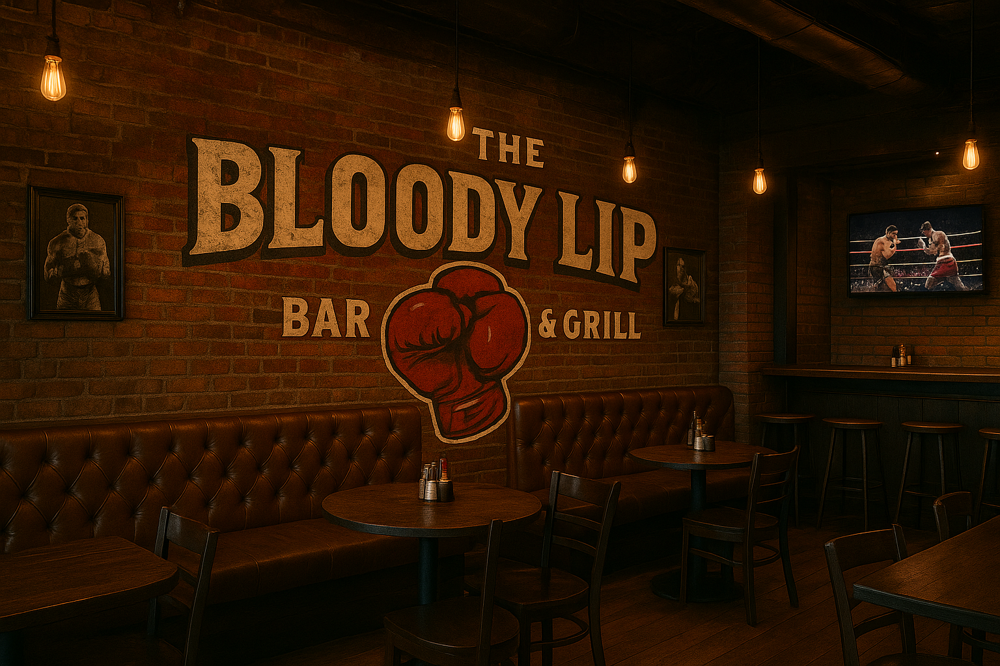
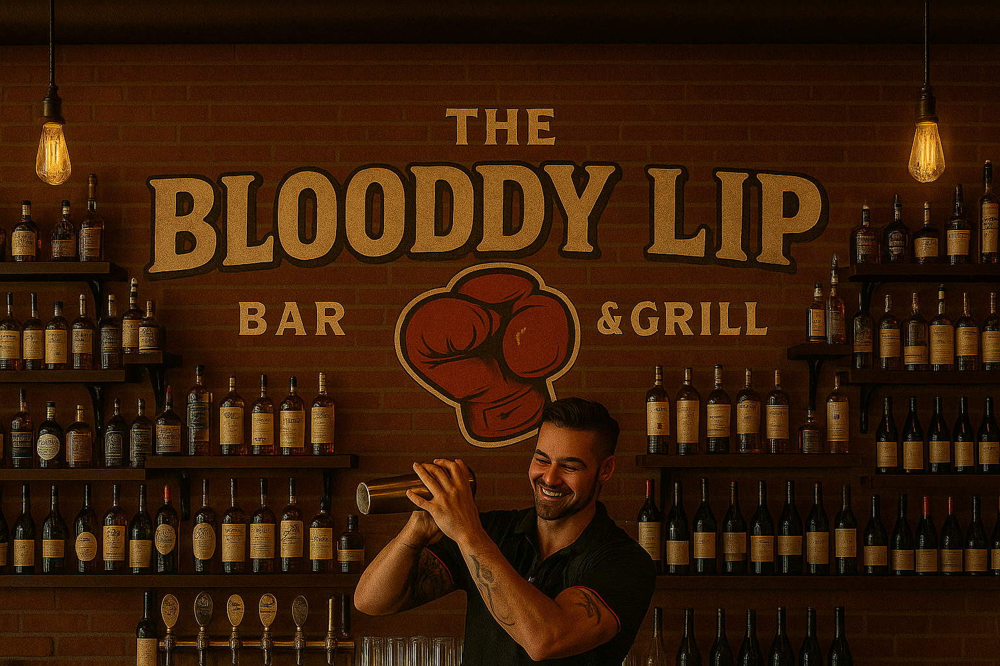
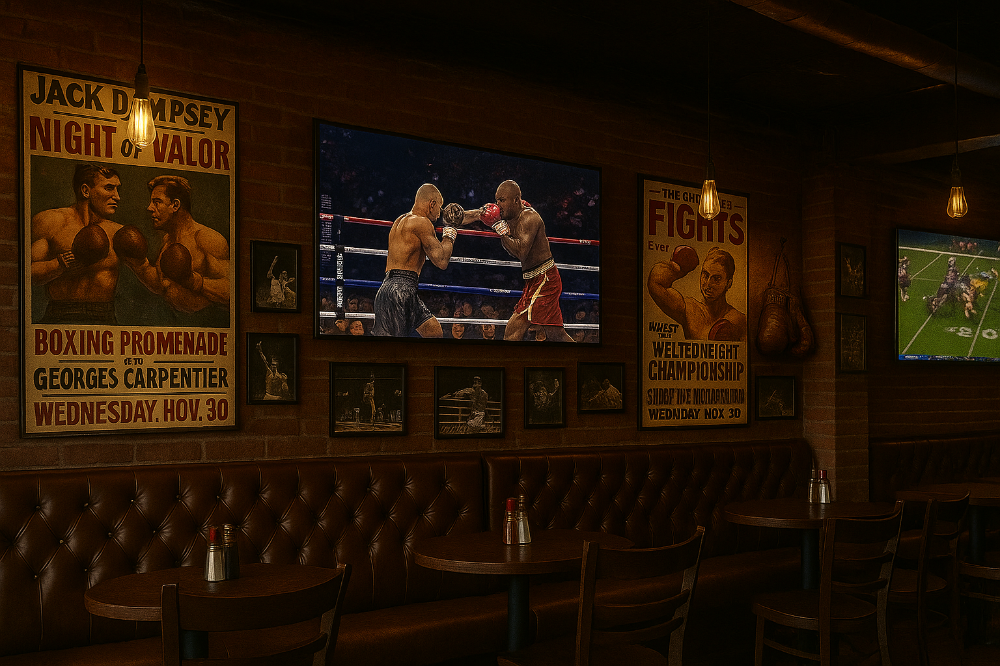
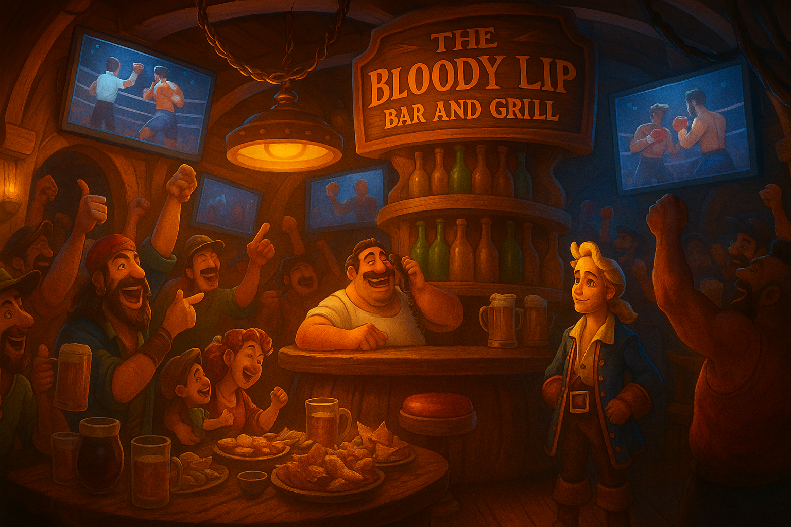

At The Bloody Lip Bar and Grill, we believe food and fun should pack a punch. From the moment you step through our doors, you’re greeted by neon lights, the buzz of conversation, and the sizzle of our grills working overtime. This isn’t a quiet, polite dining room—it’s a high-energy hangout where friends gather, sports fans cheer, and every night feels like a celebration. We’ve built a place for people who live life with passion and appetite, and our mission is simple: serve food that hits hard and drinks that never miss.

The name Bloody Lip isn’t just for show—it comes from a love of fight nights, rowdy crowds, and the kind of stories that get told long after last call. Inspired by the grit of old-school boxing gyms and the camaraderie found in sports bars, we created a space that honors both toughness and good times. Whether it’s the memory of a bruising match, a hard-earned victory, or simply laughing with friends until your sides hurt, The Bloody Lip is about celebrating the raw, unpolished moments that make life memorable.
Every photo on the walls, every fight poster, and every detail of the bar reflects that spirit. This isn’t just a bar - it’s a tribute to the nights when bruises fade, but stories live forever.
Our food isn’t made for dainty bites—it’s built to satisfy hunger with bold, unapologetic flavors. Each dish is designed to be bigger, spicier, and better than your typical bar fare.
A double-stacked masterpiece with juicy beef patties, melted cheddar, crispy bacon, caramelized onions, and house sauce dripping down the sides. Served with a mountain of fries—because champions never eat light.
Wings tossed in our fiery signature sauce, hot enough to make you break a sweat. Served with cooling ranch or blue cheese for those who can’t handle the heat, but bragging rights if you finish a dozen without reaching for a drink.
A platter so big it barely fits on the table. Piled high with tortilla chips, melted cheese, jalapeños, pico de gallo, sour cream, and topped with our slow-cooked house chili. Perfect for sharing… or not.
Our bold twist on a Bloody Mary—spiked with house-infused vodka, a secret spice blend, and garnished with celery, bacon, and even a slider on top for those who dare.
Every item on our menu is crafted to fuel good times and satisfy even the fiercest appetites.
The bar at The Bloody Lip isn’t just a place to order drinks—it’s a stage. Our bartenders mix, shake, and pour with flair, serving up cocktails that are as bold as our name. You’ll find local craft beers, crisp lagers, and international favorites on tap, alongside a rotation of special brews chosen to keep things fresh.
Cocktails are inspired by fighters and legends—think The Knockout Mule, Roundhouse Punch, and The Underdog Sour. Whether you’re in the mood for something smooth or something with a bite, we’ve got a drink that matches your mood. And for those who like to keep things simple, our whiskey shelf is stocked with rare finds and everyday favorites alike.


Walk in and you’ll feel it instantly: the raw, high-octane vibe of a place built for people who love energy and action. Exposed brick walls are covered with boxing posters, vintage gloves, and framed photos of iconic fight nights. Screens line the walls, broadcasting everything from UFC and boxing to football and late-night highlights. The lighting is low, the music is loud, and the crowd is always buzzing.
It’s the kind of place where strangers quickly become friends, especially when everyone’s cheering for the same knockout punch or last-minute goal. Whether you’re sitting at the bar, tucked into a booth, or gathered around a table with friends, you’ll always feel part of the action.
At The Bloody Lip, weekends are our main event. Fight nights bring the biggest crowds, with every TV locked on the action and the entire bar erupting with cheers, gasps, and applause. Special promotions roll out during big games and pay-per-view fights, so fans can enjoy discounted pitchers, shareable platters, and themed cocktails.
We also host live music nights, trivia battles, and seasonal parties—each one designed to keep the energy going long after the final bell. If you want a front-row experience without leaving town, there’s no better place than The Bloody Lip.

Located in the heart of the city, The Bloody Lip Bar and Grill is easy to find—and even harder to forget. We’re open late every night, serving up food, drinks, and memories until the last round.
So bring your friends, bring your appetite, and bring your fighting spirit. At The Bloody Lip, every night is a chance to step into the ring of good times.